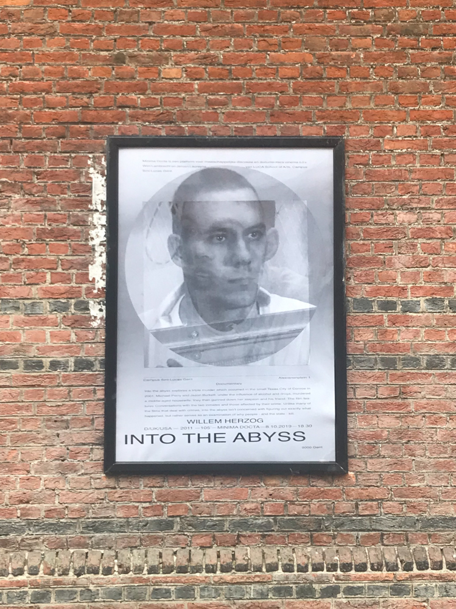
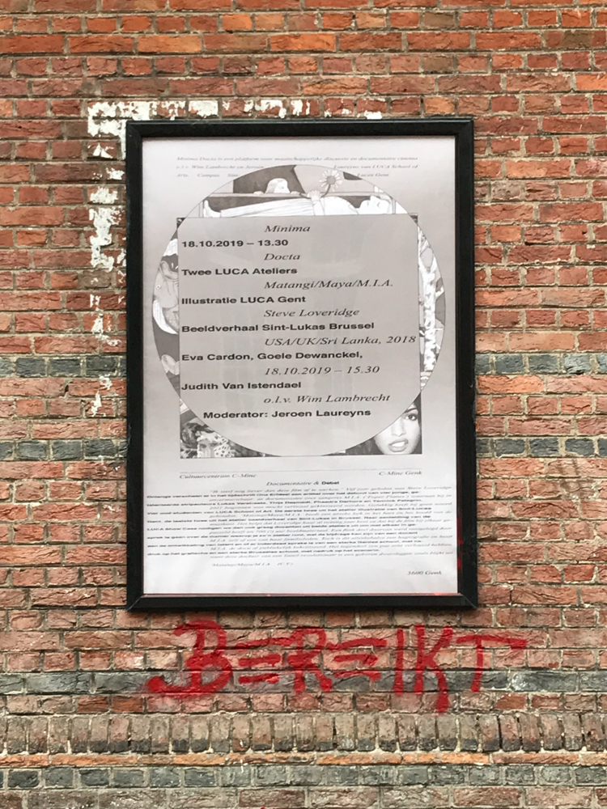

Minima Docta
MINIMA DOCTA is a platform for social discussion and documentary cinema, including Jeroen Laureyns and Wim Lambrecht, with the support of the LUCA School of Arts Campus Sint-Lucas Ghent, Image Research Unit, Arts Center CAMPO, Cinema Sphinx and 019.

